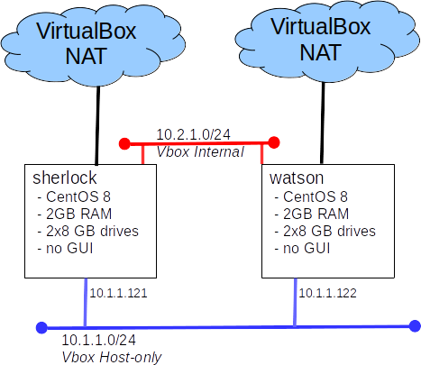

Lab: HA Clusters
Introduction
Today we will explore the creation of a 'classic' HA cluster. HA clusters are an important part of enterprise infrastructure, especially for protecting key applications like databases.
Part A: Provision the lab systems

Part B: Build a Pacemaker cluster:
Follow the excellent Clusters from Scratch tutorial from Cluster Labs to build an HA web server.
Notes:
- An appliance containing one CentOS 8 Stream node with a minimal install, sherlock.ova(from OneDrive), is provided for your convenience.
- The root password on sherlock is adminpass
- You may want to use d01 as your workstation
- Complete the tutorial, starting with Section 2.2, and going up to the end of Section 8: Replicate Storage using DRBD
- Use the host names and IP addresses from the diagram in place of those mentioned in the tutorial.
- Use 10.1.1.130 for your floating ip address.
- You may need to re-boot your systems after installing drbd (don't forget to start the cluster after the re-boot)
- In step 8.2 the tutorial creates an LVM volume to use as the backing disk for DRBD, I suggest using a partition on sdb.
- In Section 5 "Configure Fencing" simply disable fencing as described in 5.1
Part C: Grading
- Demonstrate your working cluster to your professor to earn your points.
- Your demonstration my take the form of a short video showing:
- psc cluster status
- fail-over the website to the standby node
- pcs cluster status to show the website on the standby
Part Z: Word of warning
Completing this lab has not qualified you to build a cluster for a production environment. If you want to do so, you'll need more practice and some quality time with the manuals. It is not uncommon for a 'cluster' to have more outages than a single system as a result of configuration errors and operational errors.